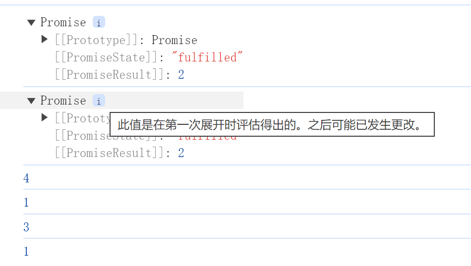

描述下列代码的执行结果（执行上下文）
foo(typeof a);
function foo(p) {
console.log(this);
console.log(p);
console.log(typeof b);
let b = 0;
}
typeof a 由于a没有定义 会得到undefined
报错，报错的位置在 console.log(typeof b);
报错原因：ReferenceError: Cannot access ‘b’ before initialization
描述下列代码的执行结果（API 与类）
class Foo {
constructor(arr) {
this.arr = arr;
}
bar(n) {
return this.arr.slice(0, n);
}
}
var f = new Foo([0, 1, 2, 3]);
console.log(f.bar(1));
console.log(f.bar(2).splice(1, 1));
console.log(f.arr);
参考答案：
[ 0 ]
[ 1 ]
[ 0, 1, 2, 3 ]
描述下列代码的执行结果（运算符）
var a = 2;
var b = 5;
console.log(a === 2 || 1 && b === 3 || 4);
true
考察的是逻辑运算符。在 || 里面，只要有一个为真，后面的直接短路，都不用去计算。所以 a === 2 得到 true 之后直接短路了，返回 true。
描述下列代码的执行结果（Promise）
const first = () => (new Promise((resolve, reject) => {
console.log(3);
let p = new Promise((resolve, reject) => {
console.log(7);
setTimeout(() => {
console.log(1);
}, 0);
setTimeout(() => {
console.log(2);
resolve(3);
}, 0)
resolve(4);
});
resolve(2);
p.then((arg) => {
console.log(arg, 5); // 1 bb
});
setTimeout(() => {
console.log(6);
}, 0);
}))
first().then((arg) => {
console.log(arg, 7); // 2 aa
setTimeout(() => {
console.log(8);
}, 0);
});
setTimeout(() => {
console.log(9);
}, 0);
console.log(10);
参考答案：
3 7 10 4 5 2 7 1 2 6 9 8
描述下列代码的执行结果（Promise）
async function m1(){
return 1;
}
async function m2(){
const n = await m1();
console.log(n)
return 2;
}
async function m3(){
const n = m2();
console.log(n);
return 3;
}
m3().then(n=>{
console.log(n);
});
m3();
console.log(4);
参考答案：

描述下列代码的执行结果（Promise）
Promise.resolve(1)
.then(2)
.then(Promise.resolve(3))
.then(console.log)
参考答案：1
描述下列代码的执行结果（Promise）
new Promise((resolve, reject) => {
reject(1);
console.log(2);
resolve(3);
console.log(4);
})
.then((res) => {
console.log(res);
})
.catch((res) => {
console.log("reject1");
});
try {
new Promise((resolve, reject) => {
throw "error";
})
.then((res) => {
console.log(res);
})
.catch((res) => {
console.log("reject2");
});
} catch (err) {
console.log(err);
}
参考答案：
2 4 reject1 reject2
[‘1’, ‘2’, ‘3’].map(parseInt) 结果是什么，为什么
[1, NaN, NaN]
解析：
一、为什么会是这个结果？
- map 函数
将数组的每个元素传递给指定的函数处理，并返回处理后的数组，所以 [‘1’,’2’,’3’].map(parseInt) 就是将字符串 1，2，3 作为元素；0，1，2 作为下标分别调用 parseInt 函数。即分别求出 parseInt(‘1’,0), parseInt(‘2’,1), parseInt(‘3’,2) 的结果。
- parseInt 函数（重点）
概念：以第二个参数为基数来解析第一个参数字符串，通常用来做十进制的向上取整（省略小数）如：parseInt(2.7) //结果为 2
特点：接收两个参数 parseInt(string,radix)
string：字母（大小写均可）、数组、特殊字符（不可放在开头,特殊字符及特殊字符后面的内容不做解析）的任意字符串，如 ‘2’、’2w’、’2!’
radix：解析字符串的基数，基数规则如下：
1） 区间范围介于 2~36 之间；
2 ） 当参数为 0，parseInt( ) 会根据十进制来解析；
3 ） 如果忽略该参数，默认的基数规则：
如果 string 以 “0x” 开头，parseInt() 会把 string 的其余部分解析为十六进制的整数；
parseInt(“0xf”) // 15
如果 string 以 0 开头，其后的字符解析为八进制或十六进制的数字；
parseInt(“08”) // 8
如果 string 以 1 ~ 9 的数字开头，parseInt() 将把它解析为十进制的整数；
parseInt(“88.99f”) // 88
只有字符串中的第一个数字会被返回。
parseInt(“10.33”) // 返回 10；
开头和结尾的空格是允许的。
parseInt(“ 69 10 “) // 返回 69
如果字符串的第一个字符不能被转换为数字，返回 NaN。
parseInt(“f”) // 返回 NaN
parseInt(“f”，16) // 返回 15
二、parseInt 方法解析的运算过程
parseInt(‘101.55’,10); // 以十进制解析，运算过程：向上取整数(不做四舍五入，省略小数)，结果为 101。
parseInt(‘101’,2); // 以二进制解析，运算过程：12 的 2 次方+02 的 1 次方+1*2 的 0 次方=4+0+1=5，结果为 5。
parseInt(‘101’,8); // 以八进制解析，运算过程：18 的 2 次方+08 的 1 次方+1*8 的 0 次方=64+0+1=65，结果为 65。
parseInt(‘101’,16); // 以十六进制解析，运算过程：116 的 2 次方+016 的 1 次方+1*16 的 0 次方=256+0+1=257，结果为 257。
三、再来分析一下结果
[‘1’,’2’,’3’].map(parseInt) 即
parseInt(‘1’,0); radix 为 0，parseInt( ) 会根据十进制来解析，所以结果为 1；
parseInt(‘2’,1); radix 为 1，超出区间范围，所以结果为 NaN；
parseInt(‘3’,2); radix 为 2，用 2 进制来解析，应以 0 和 1 开头，所以结果为 NaN。
描述下列代码的执行结果（执行上下文）
alert(a);
a();
var a = 3;
function a() {
alert(10);
}
alert(a);
a = 6;
a();
首先打印 function a() {alert(10);};
然后打印 10
最后打印 3
解析：
首先 a 变量会被提升到该全局作用域的最顶端，然后值为对应的函数，所以第一次打印出来的是函数。
接下来调用这个 a 函数，所以打印出 10
最后给这个 a 赋值为 3，然后又 alert，所以打印出 3。
之后 a 的值还会发生改变，但是由于没有 alert，说明不会再打印出其他值了。
描述下列代码的执行结果（Promise）
setTimeout(function () {
console.log("set1");
new Promise(function (resolve) {
resolve();
}).then(function () {
new Promise(function (resolve) {
resolve();
}).then(function () {
console.log("then4");
});
console.log("then2");
});
});
new Promise(function (resolve) {
console.log("pr1");
resolve();
}).then(function () {
console.log("then1");
});
setTimeout(function () {
console.log("set2");
});
console.log(2);
new Promise(function (resolve) {
resolve();
}).then(function () {
console.log("then3");
});
参考答案：
打印结果为：
pr1 2 then1 then3 set1 then2 then4 set2
下列代码的执行结果 （Promise async）
async function async1() {
console.log("async1 start");
await async2();
console.log("async1 end");
}
async function async2() {
console.log("async2");
}
console.log("script start");
setTimeout(function () {
console.log("setTimeout");
}, 0);
async1();
new Promise(function (resolve) {
console.log("promise1");
resolve();
}).then(function () {
console.log("promise2");
});
console.log("script end");
参考答案：
script start，async1 start，async2，promise1，script end，async1 end，promise2，setTimeout
解析：
在此之前我们需要知道以下几点：
- setTimeout 属于宏任务
- Promise 本身是同步的立即执行函数，Promise.then 属于微任务
- async 方法执行时，遇到 await 会立即执行表达式，表达式之后的代码放到微任务执行
第一次执行：执行同步代码
Tasks(宏任务)：run script、 setTimeout callback
Microtasks(微任务)：await、Promise then
JS stack(执行栈): script
Log: script start、async1 start、async2、promise1、script end
第二次执行：执行宏任务后，检测到微任务队列中不为空、一次性执行完所有微任务
Tasks(宏任务)：run script、 setTimeout callback
Microtasks(微任务)：Promise then
JS stack(执行栈): await
Log: script start、async1 start、async2、promise1、script end、async1 end、promise2
第三次执行：当微任务队列中为空时，执行宏任务，执行 setTimeout callback，打印日志。
Tasks(宏任务)：null
Microtasks(微任务)：null
JS stack(执行栈):setTimeout callback
Log: script start、async1 start、async2、promise1、script end、async1 end、promise2、setTimeout
下面代码的输出是什么？（ D ）
function sayHi() {
console.log(name);
console.log(age);
var name = "Lydia";
let age = 21;
}
sayHi();
- A: Lydia 和 undefined
- B: Lydia 和 ReferenceError
- C: ReferenceError 和 21
- D: undefined 和 ReferenceError
分析：
在 sayHi 函数内部，通过 var 声明的变量 name 会发生变量提升，var name 会提升到函数作用域的顶部，其默认值为 undefined*。因此输出 *name 时得到的值为 undefined；
let 声明的 age 不会发生变量提升，在输出 age 时该变量还未声明，因此会抛出 ReferenceError 的报错。
下面代码的输出是什么？（ C ）
for (var i = 0; i < 3; i++) {
setTimeout(() => console.log(i), 1);
}
for (let i = 0; i < 3; i++) {
setTimeout(() => console.log(i), 1);
}
- A: 0 1 2 和 0 1 2
- B: 0 1 2 和 3 3 3
- C: 3 3 3 和 0 1 2
分析：
JavaScript 中的执行机制，setTimeout 为异步代码，因此在 setTimeout 执行时，for 循环已经执行完毕。
第一个 for 循环中的变量 i 通过 var 声明， 为全局变量，因此每一次的 i++ 都会将全局变量 i 的值加 1，当第一个 for 执行完成后 i 的值为 3。所以再执行 setTimeout 时，输出 i 的值都为 3；
第二个 for 循环中的变量 i 通过 let 声明，为局部变量，因此每一次 for 循环时都会产生一个块级作用域，用来存储本次循环中新产生的 i 的值。当循环结束后，setTimeout 会沿着作用域链去对应的块级作用域中寻找对应的 i 值。
下面代码的输出是什么？（ B ）
const shape = {
radius: 10,
diameter() {
return this.radius * 2;
},
perimeter: () => 2 * Math.PI * this.radius,
};
shape.diameter();
shape.perimeter();
- A: 20 和 62.83185307179586
- B: 20 和 NaN
- C: 20 和 63
- D: NaN 和 63
分析：
diameter 作为对象的方法，其内部的 this 指向调用该方法的对象，因此 this.raduus 获取到的是 shape.radius 的值 10，再乘以 2 输出的值即为 20；
perimeter 是一个箭头函数，其内部的 this 应该继承声明时所在上下文中的 this，在这里即继承全局的 this，因此 this.radius 值的为 undefined，undefined 与数值相乘后值为 NaN。
下面代码的输出是什么？（ A ）
+true;
!"Lydia";
- A: 1 和 false
- B: false 和 NaN
- C: false 和 false
分析：
一元加号会将数据隐式转换为 number 类型，true 转换为数值为 1；
非运算符 ! 会将数据隐式转换为 boolean 类型后进行取反，_”Lydia”_ 转换为布尔值为 true，取反后为 false。
哪个选项是不正确的？（ A ）
const bird = {
size: "small",
};
const mouse = {
name: "Mickey",
small: true,
};
- A: mouse.bird.size
- B: mouse[bird.size]
- C: mouse[bird[“size”]]
- D: 以上选项都对
分析：
mouse 对象中没有 bird 属性，当访问一个对象不存在的属性时值为 undefined*，因此 mouse.bird 的值为 undefined，而 *undefined 作为原始数据类型没有 size 属性，因此再访问 undefined.size 时会报错。
下面代码的输出是什么？（ A ）
let c = { greeting: "Hey!" };
let d;
d = c;
c.greeting = "Hello";
console.log(d.greeting);
- A: Hello
- B: undefined
- C: ReferenceError
- D: TypeError
分析：
在 JavaScript 中，复杂类型数据在进行赋值操作时，进行的是「引用传递」，因此变量 d 和 c 指向的是同一个引用。当 c 通过引用去修改了数据后，d 再通过引用去访问数据，获取到的实际就是 c 修改后的数据。
下面代码的输出是什么？（ C ）
let a = 3;
let b = new Number(3);
let c = 3;
console.log(a == b);
console.log(a === b);
console.log(b === c);
- A: true false true
- B: false false true
- C: true false false
- D: false true true
分析：
new Number() 是 JavaScript 中一个内置的构造函数。变量 b 虽然看起来像一个数字，但它并不是一个真正的数字：它有一堆额外的功能，是一个对象。
== 会触发隐式类型转换，右侧的对象类型会自动转换为 Number 类型，因此最终返回 true。
=== 不会触发隐式类型转换，因此在比较时由于数据类型不相等而返回 false。
下面代码的输出是什么？（ D ）
class Chameleon {
static colorChange(newColor) {
this.newColor = newColor;
}
constructor({ newColor = "green" } = {}) {
this.newColor = newColor;
}
}
const freddie = new Chameleon({ newColor: "purple" });
freddie.colorChange("orange");
- A: orange
- B: purple
- C: green
- D: TypeError
分析：
colorChange 方法是静态的。 静态方法仅在创建它们的构造函数中存在，并且不能传递给任何子级。 由于 freddie 是一个子级对象，函数不会传递，所以在 freddie 实例上不存在 colorChange 方法：抛出 TypeError。
下面代码的输出是什么？（ A ）
let greeting;
greetign = {}; // Typo!
console.log(greetign);
- A: {}
- B: ReferenceError: greetign is not defined
- C: undefined
分析：
控制台会输出空对象，因为我们刚刚在全局对象上创建了一个空对象！
当我们错误地将 greeting 输入为 greetign 时，JS 解释器实际上在浏览器中将其视为 window.greetign = {}。
当我们执行以下代码时会发生什么？（ A ）
function bark() {
console.log("Woof!");
}
bark.animal = "dog";
- A 什么都不会发生
- B: SyntaxError. You cannot add properties to a function this way.
- C: undefined
- D: ReferenceError分析：因为函数也是对象！（原始类型之外的所有东西都是对象）函数是一种特殊类型的对象，我们可以给函数添加属性，且此属性是可调用的。
下面代码的输出是什么？（ A ）
function Person(firstName, lastName) {
this.firstName = firstName;
this.lastName = lastName;
}
const member = new Person("Lydia", "Hallie");
Person.getFullName = () => this.firstName + this.lastName;
console.log(member.getFullName());
- A: TypeError
- B: SyntaxError
- C: Lydia Hallie
- D: undefined undefined
分析：
Person.getFullName 是将方法添加到了函数身上，因此当我们通过实例对象 member 去调用该方法时并不能找到该方法。
下面代码的输出是什么？（ A ）
function Person(firstName, lastName) {
this.firstName = firstName;
this.lastName = lastName;
}
const lydia = new Person("Lydia", "Hallie");
const sarah = Person("Sarah", "Smith");
console.log(lydia);
console.log(sarah);
- A: Person { firstName: “Lydia”, lastName: “Hallie” } 和 undefined
- B: Person { firstName: “Lydia”, lastName: “Hallie” } 和 Person { firstName: “Sarah”, lastName: “Smith” }
- C: Person { firstName: “Lydia”, lastName: “Hallie” } 和 {}
- D: Person { firstName: “Lydia”, lastName: “Hallie” } 和 ReferenceError
分析：
lydia 是调用构造函数后得到的实例对象，拥有 firstName 和 lastName 属性；
sarah 是调用普通函数后得到的返回值，而 Person 作为普通函数没有返回值；
事件传播的三个阶段是什么？（ D ）
- A: 目标 > 捕获 > 冒泡
- B: 冒泡 > 目标 > 捕获
- C: 目标 > 冒泡 > 捕获
- D: 捕获 > 目标 > 冒泡
下面代码的输出是什么？（ C ）
function sum(a, b) {
return a + b;
}
sum(1, "2");
- A: NaN
- B: TypeError
- C: “12”
- D: 3
分析：
任意数据类型在跟 String 做 + 运算时，都会隐式转换为 String 类型。
即 a 所对应的 Number 值 1，被隐式转换为了 String 值 “1”，最终字符串拼接的到 “12”。
下面代码的输出是什么？（ C ）
let number = 0;
console.log(number++);
console.log(++number);
console.log(number);
- A: 1 1 2
- B: 1 2 2
- C: 0 2 2
- D: 0 1 2
分析：
++ 后置时，先输出，后加 1；++ 前置时，先加 1，后输出；
第一次输出的值为 0，输出完成后 number 加 1 变为 1。
第二次输出，number 先加 1 变为 2，然后输出值 2。
第三次输出，number 值没有变化，还是 2。
下面代码的输出是什么？（ B ）
function getPersonInfo(one, two, three) {
console.log(one);
console.log(two);
console.log(three);
}
const person = "Lydia";
const age = 21;
getPersonInfo`${person} is ${age} years old`;
- A: Lydia21[“”, “is”, “years old”]
- B: [“”, “is”, “years old”]Lydia21
- C: Lydia[“”, “is”, “years old”]21
分析：
如果使用标记的模板字符串，则第一个参数的值始终是字符串值的数组。 其余参数获取传递到模板字符串中的表达式的值！
下面代码的输出是什么？（ C ）
function checkAge(data) {
if (data === { age: 18 }) {
console.log("You are an adult!");
} else if (data == { age: 18 }) {
console.log("You are still an adult.");
} else {
console.log(`Hmm.. You don't have an age I guess`);
}
}
checkAge({ age: 18 });
- A: You are an adult!
- B: You are still an adult.
- C: Hmm.. You don’t have an age I guess
分析：
在比较相等性时，原始类型通过它们的值进行比较，而对象通过它们的引用进行比较。
data 和条件中的 { age: 18 } 两个不同引用的对象，因此永远都不相等。
下面代码的输出是什么？（ C ）
function getAge(...args) {
console.log(typeof args);
}
getAge(21);
- A: “number”
- B: “array”
- C: “object”
- D: “NaN”
分析：
ES6 中的不定参数（…args）返回的是一个数组。
typeof 检查数组的类型返回的值是 object。
下面代码的输出是什么？（ C ）
function getAge() {
"use strict";
age = 21;
console.log(age);
}
getAge();
- A: 21
- B: undefined
- C: ReferenceError
- D: TypeError
分析：
“use strict” 严格模式中，使用未声明的变量会引发报错。
下面代码的输出是什么？（ A ）
const sum = eval("10*10+5");
- A: 105
- B: “105”
- C: TypeError
- D: “1010+5”*
分析：
eval 方法会将字符串当作 JavaScript 代码进行解析。
下面代码的输出是什么？（ B ）
var num = 8;
var num = 10;
console.log(num);
- A: 8
- B: 10
- C: SyntaxError
- D: ReferenceError
分析：
var 声明的变量允许重复声明，但后面的值会覆盖前面的值。
下面代码的输出是什么？（ C ）
const obj = { 1: "a", 2: "b", 3: "c" };
const set = new Set([1, 2, 3, 4, 5]);
obj.hasOwnProperty("1");
obj.hasOwnProperty(1);
set.has("1");
set.has(1);
- A: falsetruefalsetrue
- B: falsetruetruetrue
- C: truetruefalsetrue
- D: truetruetruetrue
下面代码的输出是什么？（ C ）
const obj = { a: "one", b: "two", a: "three" };
console.log(obj);
- A: { a: “one”, b: “two” }
- B: { b: “two”, a: “three” }
- C: { a: “three”, b: “two” }
- D: SyntaxError
分析：
如果对象有两个具有相同名称的键，则后面的将替前面的键。它仍将处于第一个位置，但具有最后指定的值。
下面代码的输出是什么？（ C ）
for (let i = 1; i < 5; i++) {
if (i === 3) continue;
console.log(i);
}
- A: 1 2
- B: 1 2 3
- C: 1 2 4
- D: 1 3 4
分析：
当 i 的值为 3 时，进入 if 语句执行 continue，结束本次循环，立即进行下一次循环。
下面代码的输出是什么？（ A ）
String.prototype.giveLydiaPizza = () => {
return "Just give Lydia pizza already!";
};
const name = "Lydia";
name.giveLydiaPizza();
- A: “Just give Lydia pizza already!”
- B: TypeError: not a function
- C: SyntaxError
- D: undefined
分析：
String 是一个内置的构造函数，我们可以为它添加属性。 我们给它的原型添加了一个方法。 原始类型的字符串自动转换为字符串对象，由字符串原型函数生成。 因此，所有字符串（字符串对象）都可以访问该方法！
当使用基本类型的字符串调用 giveLydiaPizza 时，实际上发生了下面的过程：
- 创建一个 String 的包装类型实例
- 在实例上调用 substring 方法
- 销毁实例
下面代码的输出是什么？（ B ）
const a = {};
const b = { key: "b" };
const c = { key: "c" };
a[b] = 123;
a[c] = 456;
console.log(a[b]);
- A: 123
- B: 456
- C: undefined
- D: ReferenceError
分析：
当 b 和 c 作为一个对象的键时，会自动转换为字符串，而对象自动转换为字符串化时，结果都为 [Object object]*。因此 *a[b] 和 a[c] 其实都是同一个属性 a[“Object object”]。
对象同名的属性后面的值会覆盖前面的，因此最终 a[“Object object”] 的值为 456。
下面代码的输出是什么？（ B ）
const foo = () => console.log("First");
const bar = () => setTimeout(() => console.log("Second"));
const baz = () => console.log("Third");
bar();
foo();
baz();
- A: First Second Third
- B: First Third Second
- C: Second First Third
- D: Second Third First
分析：
bar 函数中执行的是一段异步代码，按照 JavaScript 中的事件循环机制，主线程中的所有同步代码执行完成后才会执行异步代码。因此 “Second” 最后输出。
单击按钮时 event.target 是什么？（ C ）
<div onclick="console.log('first div')">
<div onclick="console.log('second div')">
<button onclick="console.log('button')">Click!</button>
</div>
</div>
- A: div 外部
- B: div 内部
- C: button
- D: 所有嵌套元素的数组
分析：
event.target 指向的是事件目标，即触发事件的元素。因此点击
单击下面的 html 片段打印的内容是什么？（ A ）
<div onclick="console.log('div')">
<p onclick="console.log('p')">Click here!</p>
</div>
- A: pdiv
- B: divp
- C: p
- D: div
分析：
onclick 绑定的事件为冒泡型事件。因此当点击 p 标签时，事件会从事件目标开始依次往外触发。
下面代码的输出是什么？（ D ）
const person = { name: "Lydia" };
function sayHi(age) {
console.log(`${this.name} is ${age}`);
}
sayHi.call(person, 21);
sayHi.bind(person, 21);
- A: undefined is 21Lydia is 21
- B: functionfunction
- C: Lydia is 21Lydia is 21
- D: Lydia is 21function
分析：
call 和 bind 都可以修改 this 的指向，但区别在于 call 方法会立即执行，而 bind 会返回一个修改后的新函数。
下面代码的输出是什么？（ B ）
function sayHi() {
return (() => 0)();
}
typeof sayHi();
- A: “object”
- B: “number”
- C: “function”
- D: “undefined”
分析：
return 后是一个 IIFE*，其返回值是 0，因此 *sayHi 函数中返回的是一个 0。typeof 检测 sayHi 返回值类型即为 number。
下面这些值哪些是假值？（ A ）
0;
new Number(0);
("");
(" ");
new Boolean(false);
undefined;
- A: 0 “” undefined
- B: 0new Number(0) “” new Boolean(false)undefined
- C: 0 “” new Boolean(false)undefined
- D: 所有都是假值。
分析：
JavaScript 中假值只有 6 个：false、””、null、undefined、NaN、0
下面代码的输出是什么？（ B ）
console.log(typeof typeof 1);
- A: “number”
- B: “string”
- C: “object”
- D: “undefined”
分析：
typeof 1 返回 _”number”_，typeof “number” 返回 “string”
下面代码的输出是什么？（ C ）
const numbers = [1, 2, 3];
numbers[10] = 11;
console.log(numbers);
- A: [1, 2, 3, 7 x null, 11]
- B: [1, 2, 3, 11]
- C: [1, 2, 3, 7 x empty, 11]
- D: SyntaxError
分析：
当你为数组中的元素设置一个超过数组长度的值时，JavaScript 会创建一个名为“空插槽”的东西。 这些位置的值实际上是 undefined，但你会看到类似的东西：
[1, 2, 3, 7 x empty, 11]
这取决于你运行它的位置（每个浏览器有可能不同）。
下面代码的输出是什么？（ A ）
(() => {
let x, y;
try {
throw new Error();
} catch (x) {
(x = 1), (y = 2);
console.log(x);
}
console.log(x);
console.log(y);
})();
- A: 1undefined2
- B: undefinedundefinedundefined
- C: 112
- D: 1undefinedundefined
分析：
catch 块接收参数 x。当我们传递参数时，这与变量的 x 不同。这个变量 x 是属于 catch 作用域的。
之后，我们将这个块级作用域的变量设置为 1，并设置变量 y 的值。 现在，我们打印块级作用域的变量 x，它等于 1。
在 catch 块之外，x 仍然是 undefined*，而 y 是 2。 当我们想在 catch 块之外的 console.log(x) 时，它返回 undefined，而 *y 返回 2。
下面代码的输出是什么?
[[0, 1], [2, 3]].reduce(
(acc, cur) => {
return acc.concat(cur);
},
[1, 2]
);
- A: [0, 1, 2, 3, 1, 2]
- B: [6, 1, 2]
- C: [1, 2, 0, 1, 2, 3]
- D: [1, 2, 6]
分析：
[1,2] 是我们的初始值。 这是我们开始执行 reduce 函数的初始值，以及第一个 acc 的值。 在第一轮中，acc 是 [1,2]，cur 是 _[0,1]。 我们将它们连接起来，结果是 _[1,2,0,1]。
然后，acc 的值为 [1,2,0,1]，cur 的值为 _[2,3]。 我们将它们连接起来，得到 _[1,2,0,1,2,3]。
下面代码的输出是什么？（ B ）
!!null;
!!"";
!!1;
- A: false true false
- B: false false true
- C: false true true
- D: true true false
分析：
null 是假值。 !null 返回 true*。 *!true 返回 false。
“” 是假值。 !”” 返回 true*。 *!true 返回 false。
1 是真值。 !1 返回 false*。 *!false 返回 true。
setInterval 方法的返回值什么？（ A ）
setInterval(() => console.log("Hi"), 1000);
- A：一个唯一的 id
- B：指定的毫秒数
- C：传递的函数
- D：undefined
分析：
它返回一个唯一的 id*。 此 *id 可用于使用 clearInterval() 函数清除该定时器。
下面代码的返回值是什么？（ A ）
[..."Lydia"];
- A: [“L”, “y”, “d”, “i”, “a”]
- B: [“Lydia”]
- C: [[], “Lydia”]
- D: [[“L”, “y”, “d”, “i”, “a”]]
分析：
字符串是可迭代的。 扩展运算符将迭代的每个字符映射到一个元素。
分析以下代码的执行结果并解释为什么。
var a = {n: 1};
var b = a;
a.x = a = {n: 2};
console.log(a.x)
console.log(b.x)
运行结果：
undefined、{n: 2}
分析：
首先，a 和 b 同时引用了 {n: 1} 对象，接着执行到 a.x = a = {n: 2} 语句，虽然赋值是从右到左执行，但是点（.）的优先级比赋值符（=）要高，所以这里首先执行 a.x*，相当于为 a（或者 b）所指向的 *{n:1} 对象新增了一个属性 x，即此时对象将变为 {n: 1; x: undefined}*。然后按正常情况，从右到左进行赋值，此时执行 *a = {n: 2} 的时候，a 的引用改变，指向了新对象 {n: 2}*，而 *b 依然指向的是旧对象 {n: 1; x: undefined}*。之后再执行 *a.x = {n: 2} 的时候，并不会重新解析一遍 a，而是沿用最初解析 a.x 时候的 a，即旧对象 {n: 1; x: undefined}*，故此时旧对象的 x 的值变为{n: 2}，旧对象为 {n: 1; x: {n: 2}}，它依然被 *b 引用着。
最后，a 指向的对象为 {n: 2}，b 指向的对象为 {n: 1; x: {n: 2}}*。因此输出 a.x 值为 undefined，输出 *b.x 值为 {n: 2}。
分析以下代码的执行结果并解释为什么。
// example 1
var a = {}, b = '123', c = 123;
a[b] = 'b';
a[c] = 'c';
console.log(a[b]);
// example 2
var a = {}, b = Symbol('123'), c = Symbol('123');
a[b] = 'b';
a[c] = 'c';
console.log(a[b]);
// example 3
var a = {}, b = {key:'123'}, c = {key:'456'};
a[b] = 'b';
a[c] = 'c';
console.log(a[b]);
运行结果：
example 1：c
example 2：b
example 3：c
分析：
这题考察的是对象的键名的转换。
- 对象的键名只能是字符串和 Symbol 类型。
- 其他类型的键名会被转换成字符串类型。
- 对象转字符串默认会调用 String 方法。
因此 example 1 中 c 作为键名后也是 ‘123’*，直接覆盖 *a[b] 的值；而 example 2 中，Symbol 作为 ES6 中新增的基本数据类型，它的特点就是唯一，Symbol() 方法生成的值都是唯一的，里面的参数不会影响结果。因此在 example 2 中 b 和 c 是两个不同的键名；example 3 中，对象不能作为键名，因此 b 和 c 都会通过 String() 方法转为字符串 _[object Object]_。
下面的代码的输出是什么(不知道，偏)
var b = 10;
(function b() {
b = 20;
console.log(b)
})()
运行结果：
function b() { b = 20; console.log(b) } 分析：
当 JavaScript 解释器遇到非匿名立即执行函数（题目中的 b）时，会创建一个辅助的特定对象，然后将函数名称当作这个对象的属性，因此函数内部可以访问到 b，但是这个值又是只读的，所以对他的赋值并不生效，所以打印的结果还是这个函数，并且外部的值也没有发生更改。
下面代码中，a 在什么情况下会执行输出语句打印 1 ？
var a = ?;
if(a == 1 && a == 2 && a == 3){
console.log(1);
}
分析：
这道题考查的知识点是：相等运算符（==）在作比较时会进行隐式转换，而如果操作数是引用类型，则会调用 toString() 或 valueOf() 方法对引用类型数据进行隐式转换。
// 方法一：利用 toString()
let a = {
i: 1,
toString () {
return a.i++;
}
}
if(a == 1 && a == 2 && a == 3) {
console.log('1');
}
// 方法二：利用 valueOf()
let a = {
i: 1,
valueOf () {
return a.i++
}
}
if(a == 1 && a == 2 && a == 3) {
console.log('1');
}
// 方法三：利用数组（这个是真的骚）
var a = [1,2,3];
a.join = a.shift;
if(a == 1 && a == 2 && a == 3) {
console.log('1');
}
// 方法四：利用 Symbol
let a = {[Symbol.toPrimitive]: ((i) => () => ++i) (0)};
if(a == 1 && a == 2 && a == 3) {
console.log('1');
}
方法一和方法二没啥解释的了，解释下方法三和方法四。
方法三：
a.join = a.shift 的目的是将数组的 join 方法替换成 shift 方法。因为数组在参与相等比较时也会通过 toString() 将数组转为字符串，而该字符串实际上是数组中每个元素的 toString() 返回值经调用 join() 方法拼接（由逗号隔开）组成。现在我们将 join() 方法替换为了 shift() 方法，也就意味着数组在通过 toString() 隐式转换后，得到是 shift() 的返回值，每次返回数组中的第一个元素，而原数组删除第一个值，正好可以使判断成立。
方法四：
ES6 中提供了 11 个内置的 Symbo 值，指向语言内部使用的方法。Symbol.toPrimitive 就是其中一个，它指向一个方法，当该对象被转为原始类型的值时，会调用这个方法，并返回该对象对应的原始类型值。这里就是改变这个属性，把它的值改为一个闭包返回的函数。